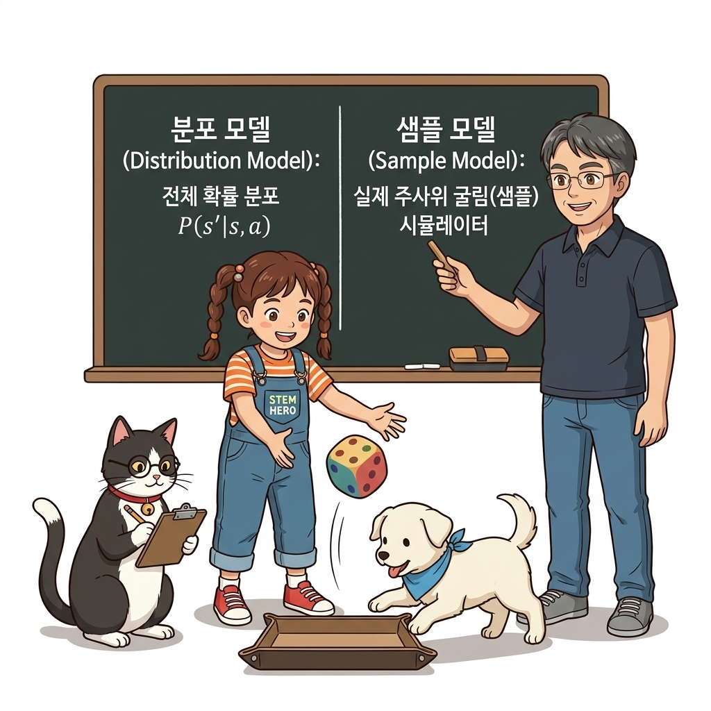
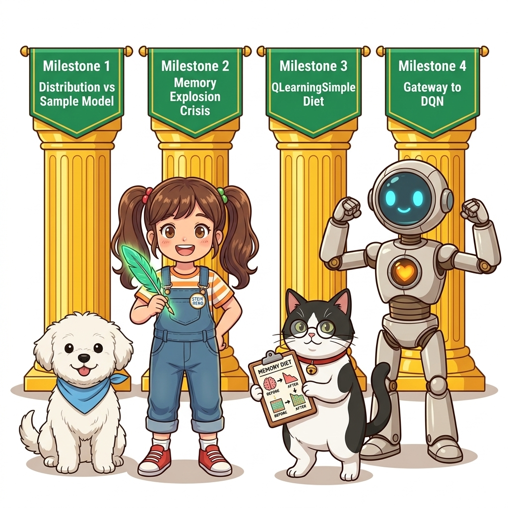
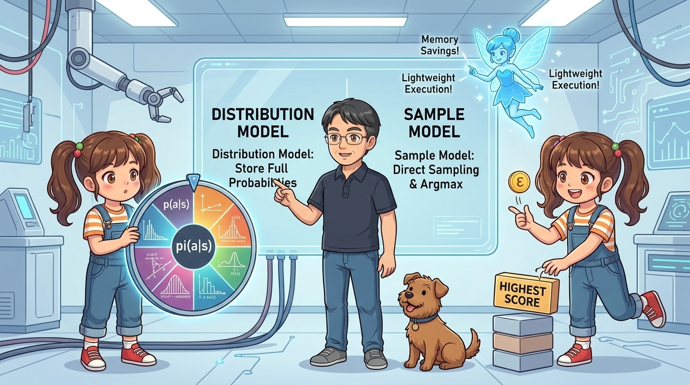
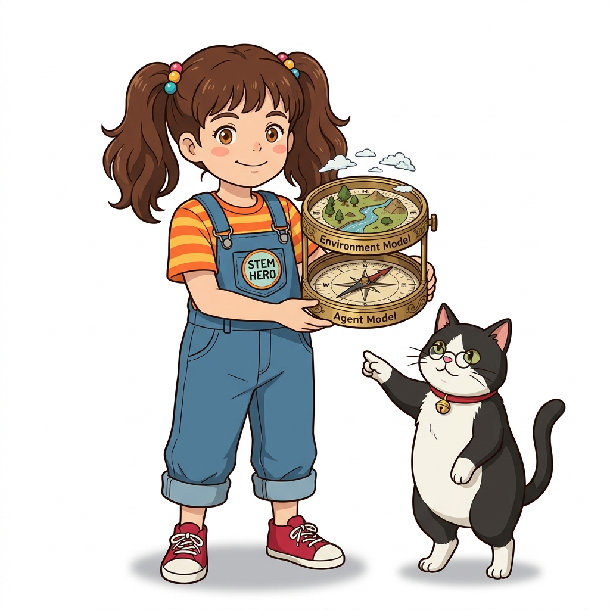
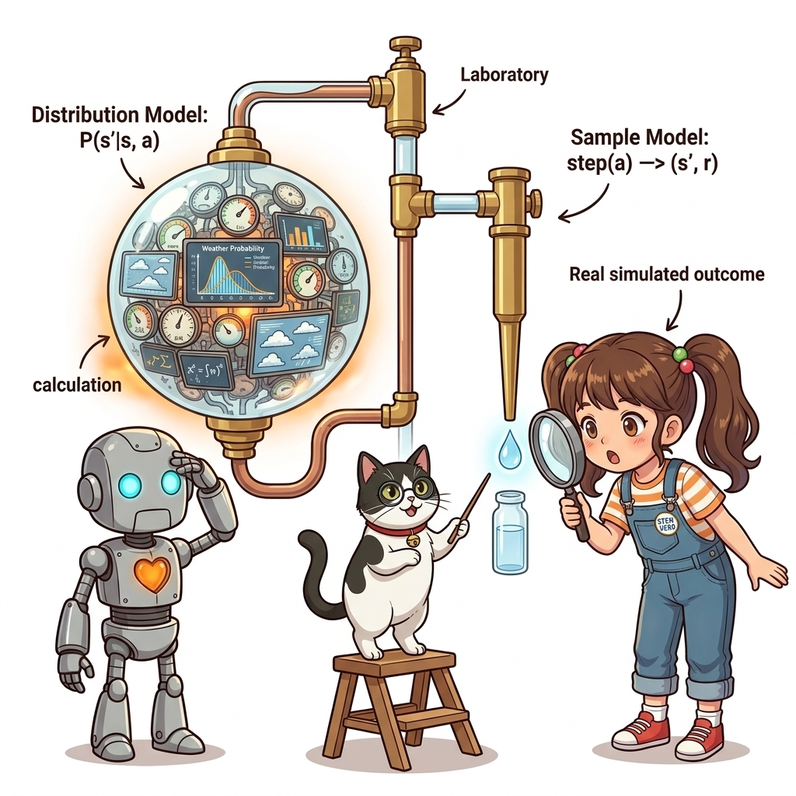
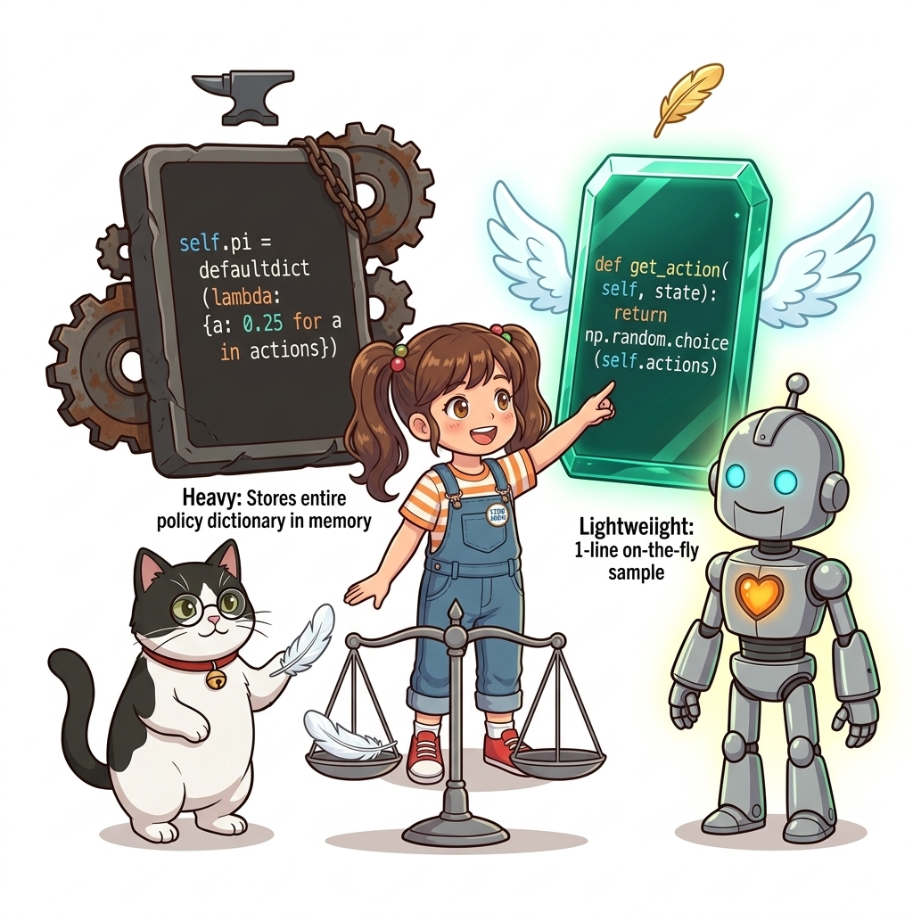
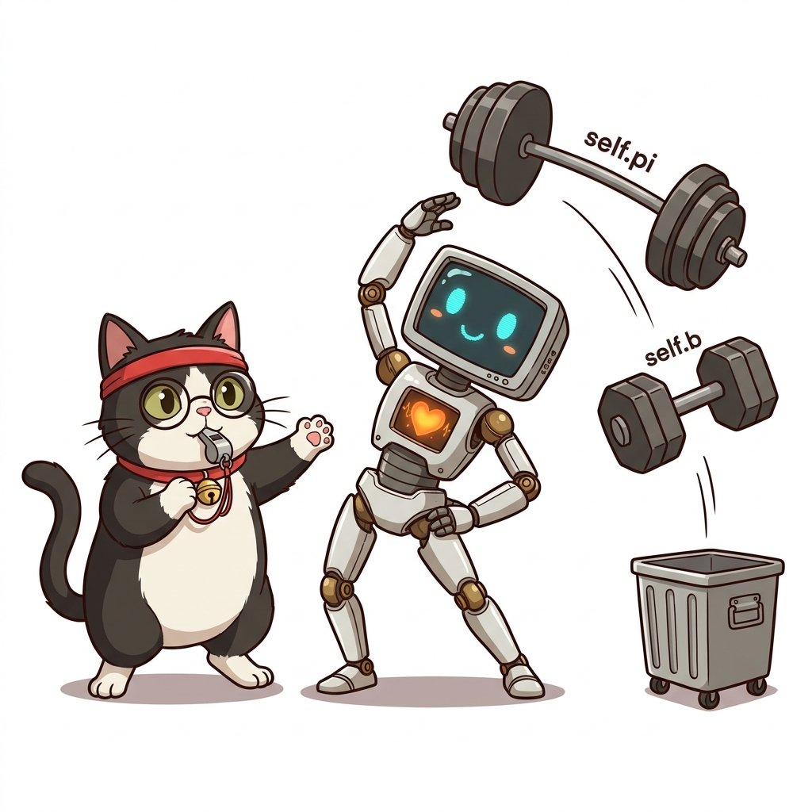
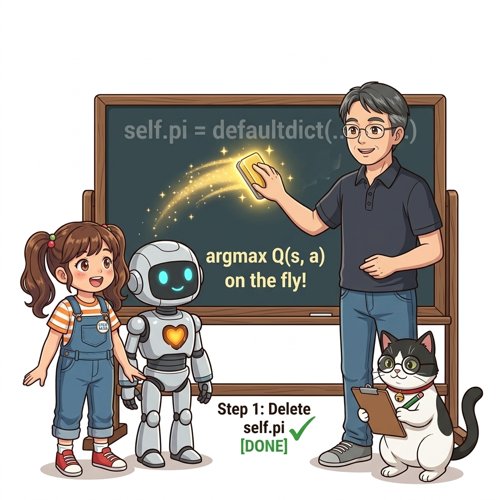
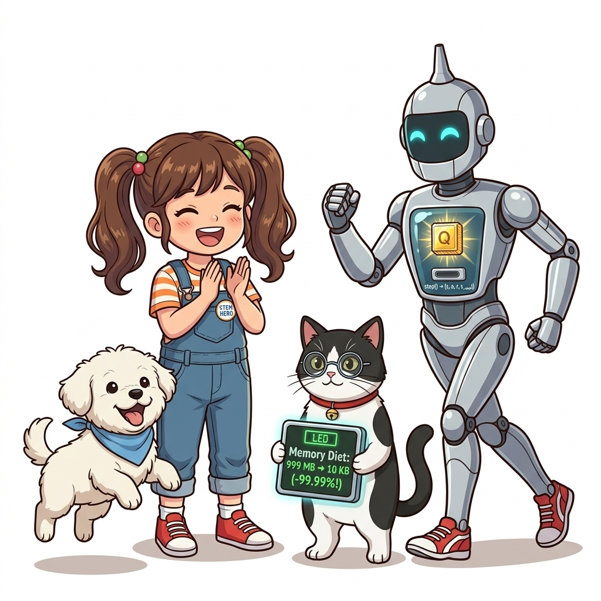
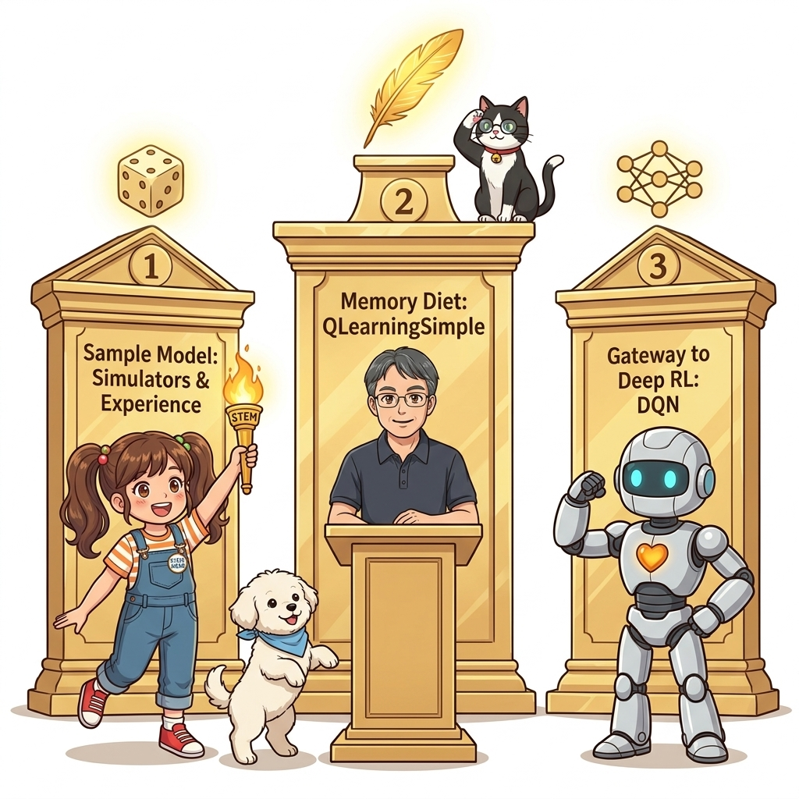

10.5 분포 모델과 샘플 모델: 에이전트의 초경량화
강화학습에서 ‘모델(Model)’이라는 단어는 환경의 특성뿐만 아니라, 에이전트가 자신의 정책을 컴퓨터 메모리에 표현하는 내부 구조를 설명할 때도 매우 중요하게 쓰입니다.
그림 10-5-1 환경과 에이전트의 두 가지 모델 체계와, 무거운 정책 딕셔너리를 벗어던지고 초경량 실시간 코드로 다이어트하는 Q-러닝의 진화 조감도
에이전트가 상태별 확률 분포를 일일이 기억하고 관리하는 분포 모델(Distribution Model)에서 벗어나, 행동을 직접 즉석에서 추출하는 샘플 모델(Sample Model)로 전환함으로써 코드를 극적으로 단순화하고 딥러닝(DQN)으로 나아가는 징검다리를 놓아봅시다!

그림 10-5-2 칠판에 그려진 이론적 확률 분포(분포 모델)와 토토가 통에 넣고 굴린 주사위 실증 표본들(샘플 모델)의 관계를 분석해 주는 지니와 도로시
그림 10-5-3 10.5절 환경과 에이전트의 모델 개념 구분부터 Q-러닝의 초경량화 다이어트, 그리고 무한한 연속 공간과 딥러닝으로의 연결까지 이어지는 4대 마일스톤 로드맵- 학습 목표:
- ‘환경의 모델’과 ‘에이전트의 모델’이 갖는 서로 다른 두 가지 층위의 개념 명확히 구분
- 모든 상태의 확률 분포를 메모리에 적어두는 분포 모델과, 요청 시 즉석에서 추출하는 샘플 모델의 차이 분석
RandomAgent비교를 통해 체감하는 메모리 복잡도와 계산 속도의 압도적 차이 확인- 10.4절의
QLearningAgent에서 불필요한self.pi와self.b딕셔너리를 완전히 깎아내는 2단계 소프트웨어 다이어트 과정 마스터 - 오직
self.Q테이블 하나와 동전 튕기기(rand() < ε), 그리고np.argmax()만으로 완성되는 초경량q_learning_simple.py구현 - 연속 상태 공간(Continuous State Space)의 무한한 차원에서 테이블이 폭발하는 한계를 극복하고, 11장 심층 신경망(DQN)으로 직결되는 아키텍처 호환성 파악

그림 10-5-4 모든 상태마다 거대한 행동 확률 원판 $\pi(a \mid s)$을 유지해야 하는 분포 모델(왼쪽)과, 동전 튕기기($\varepsilon$)와 최고 점수 블록 직접 선택($\operatorname{argmax}$)만으로 초경량 실행과 메모리 절약을 달성하는 샘플 모델(오른쪽)의 차이를 설명하는 이호진 교수님과 도로시10.5.1 강화학습에서의 두 가지 ‘모델’ 개념
‘모델(Model)’이라는 용어는 문맥에 따라 두 가지 서로 다른 층위에서 사용됩니다:

그림 10-5-5 강화학습에서의 두 층위: 위쪽의 ‘환경의 모델(자연의 물리 법칙)’과 아래쪽의 ‘에이전트의 모델(마음속 정책 표현)’을 가리키는 2단 황금 나침반과 도로시1) 환경(Environment)의 관점: 확률 지도 vs 시뮬레이터
- 환경의 분포 모델 (Distribution Model):
- 동적 계획법(DP)처럼 상태 전이 확률 행렬 $p(s’ \mid s, a)$과 보상 함수 $r(s, a, s’)$의 완전한 확률 분포 표를 에이전트가 손에 쥐고 있는 경우입니다.
- 다음 상태로 넘어갈 모든 경우의 수와 확률 가중치를 완벽하게 알고 있습니다.
- 환경의 샘플 모델 (Sample Model):
- 몬테카를로법(MC)이나 시간차 학습(TD)처럼 내부 확률 수식은 전혀 모르지만, 행동을 집어넣으면 다음 상태와 보상을 툭 뱉어내는 시뮬레이터(
env.step(action))를 가진 경우입니다. - 전이 확률 표는 없지만, 실제로 부딪쳐서 나오는 단 하나의 샘플 데이터를 즉시 관측할 수 있습니다.
- 몬테카를로법(MC)이나 시간차 학습(TD)처럼 내부 확률 수식은 전혀 모르지만, 행동을 집어넣으면 다음 상태와 보상을 툭 뱉어내는 시뮬레이터(

그림 10-5-6 모든 전이 확률이 빽빽하게 적힌 거대한 백과사전 지도(환경의 분포 모델, 왼쪽) vs 레버를 당기면 다음 상태 구슬이 툭 떨어지는 직관적인 자판기 시뮬레이터(환경의 샘플 모델, 오른쪽)2) 에이전트(Agent)의 관점: 정책 딕셔너리 vs 즉석 난수 생성
에이전트가 자신의 정책(어떤 상태에서 무슨 행동을 취할 것인가)을 컴퓨터 메모리에 표현하는 방식에도 똑같이 두 가지가 존재합니다:
- 에이전트의 분포 모델:
- 모든 상태 $s$마다 “위로 갈 확률 70%, 아래로 갈 확률 10%, 좌 10%, 우 10%”와 같은 명시적인 확률 분포 딕셔너리(
self.pi[state],self.b[state])를 메모리에 할당하여 보관하는 방식입니다. - 지금까지 우리가 구현했던 에이전트들이 채택해 온 전통적인 구조입니다.
- 모든 상태 $s$마다 “위로 갈 확률 70%, 아래로 갈 확률 10%, 좌 10%, 우 10%”와 같은 명시적인 확률 분포 딕셔너리(
- 에이전트의 샘플 모델:
- 확률 분포 딕셔너리 자체를 아예 만들지 않습니다!
- 오직 “행동을 하나 뽑아달라(
get_action)”는 요청이 들어오는 바로 그 순간, 즉석에서 난수를 발생시켜 행동 하나를 샘플링하거나 최댓값($\operatorname{argmax}$)을 계산해 반환하는 초경량 방식입니다.
 그림 10-5-7 수백만 개의 상태마다 두꺼운 정책 바인더(
그림 10-5-7 수백만 개의 상태마다 두꺼운 정책 바인더(self.pi[state])를 등 뒤에 짊어지고 메모리 오버플로우로 헉헉대는 틴맨 로봇과, 불필요한 바인더를 과감히 버릴 것을 제안하는 지니 조교
10.5.2 무작위 에이전트로 비교하는 구현 차이
가장 단순한 무작위 에이전트(Random Agent)를 두 가지 방식으로 비교해 보면 차이가 확연히 드러납니다.

그림 10-5-8 무거운 딕셔너리와 확률 리스트를 관리하는 분포 모델(위쪽 두루마리, 100MB 쇳덩이) vs 단 한 줄의return np.random.choice(4)로 깃털처럼 가벼운 샘플 모델(아래쪽 두루마리, 0-Byte)의 극명한 대조
1) 분포 모델 방식: 무거운 상태별 확률 딕셔너리 유지
from collections import defaultdict
import numpy as np
class RandomAgentDistribution:
def __init__(self):
# 모든 상태마다 4개 행동의 확률 분포를 명시적으로 저장
random_actions = {0: 0.25, 1: 0.25, 2: 0.25, 3: 0.25}
self.pi = defaultdict(lambda: random_actions)
def get_action(self, state):
# 1. 상태에 해당하는 확률 분포 딕셔너리를 메모리에서 꺼냄
action_probs = self.pi[state]
actions = list(action_probs.keys())
probs = list(action_probs.values())
# 2. 확률 분포 p에 따라 가중 무작위 샘플링
return np.random.choice(actions, p=probs)
- 모든 상태가 방문될 때마다 딕셔너리에 4개의 float 키-값 쌍이 누적됩니다.
- 상태 공간이 수만 개, 수억 개로 커지면 메모리 낭비가 걷잡을 수 없이 극심해집니다.
2) 샘플 모델 방식: 0-Byte의 가벼움
import numpy as np
class RandomAgentSample:
def get_action(self, state):
# 확률 분포 딕셔너리 없이 4개 행동 중 하나를 즉석 난수 추출!
return np.random.choice(4)
- 클래스 초기화(
__init__)조차 필요 없습니다! - 메모리 사용량이 완벽한 0에 수렴하며 속도도 압도적으로 빠릅니다.
10.5.3 Q-러닝의 단계적 다이어트: 분포 모델에서 샘플 모델로
10.4절에서 우리가 구현했던 QLearningAgent는 전형적인 분포 모델이었습니다:
- 대상 정책 딕셔너리
self.pi유지 - 행동 정책 딕셔너리
self.b유지 - 매 스텝마다
greedy_probs()를 호출하여 두 딕셔너리를 일일이 갱신
이 무거운 코드를 두 단계에 걸쳐 가볍게 깎아내 봅시다.

그림 10-5-9 지니 코치의 호각 소리에 맞춰 무거운self.pi와 self.b 덤벨을 과감히 분리수거통에 던져버리고 슬림한 몸매를 가꾸는 틴맨 로봇
Step 1: 불필요한 self.pi 삭제와 self.b의 지연 평가

그림 10-5-10 Q 테이블만 있으면 언제든argmax로 최적 행동을 찾을 수 있으므로, 중복 메모리였던 self.pi를 쓰레기통에 슛해서 날려버리는 통쾌한 지니 조교
class QLearningAgentStep1:
def __init__(self):
self.gamma = 0.9
self.alpha = 0.8
self.epsilon = 0.1
self.action_size = 4
# self.pi 완전 삭제! (Q 테이블이 이미 모든 답을 쥐고 있으므로 불필요)
self.b = defaultdict(lambda: {0: 0.25, 1: 0.25, 2: 0.25, 3: 0.25})
self.Q = defaultdict(lambda: 0)
def get_action(self, state):
# 행동을 결정해야 하는 순간에만 Q를 바탕으로 ε-탐욕 확률을 즉석 생성
self.b[state] = greedy_probs(self.Q, state, self.epsilon)
action_probs = self.b[state]
actions = list(action_probs.keys())
probs = list(action_probs.values())
return np.random.choice(actions, p=probs)
def update(self, state, action, reward, next_state, done):
if done:
next_q_max = 0
else:
next_qs = [self.Q[next_state, a] for a in range(self.action_size)]
next_q_max = max(next_qs)
target = reward + self.gamma * next_q_max
self.Q[state, action] += (target - self.Q[state, action]) * self.alpha
# update() 안에서 정책 딕셔너리를 매번 갱신하던 무거운 연산 부하 완전 소거!
Step 2: 완벽한 샘플 모델 Q-러닝 (q_learning_simple.py)
이제 마지막으로 남아있던 행동 정책 딕셔너리 self.b마저 완전히 없애버립시다!

그림 10-5-11self.b마저 날려버리고 오직 동전 튕기기(rand() < ε)와 최고 점수(np.argmax)만으로 날렵하고 민첩하게 달리는 궁극의 초경량 샘플 모델 틴맨 로봇
import numpy as np
from collections import defaultdict
class QLearningAgentSimple:
def __init__(self):
self.gamma = 0.9
self.alpha = 0.8
self.epsilon = 0.1
self.action_size = 4
self.Q = defaultdict(lambda: 0) # 👑 오직 Q 테이블 하나만 유지!
def get_action(self, state):
# ❶ ε의 확률로 무작위 탐험 (동전 튕기기!)
if np.random.rand() < self.epsilon:
return np.random.choice(self.action_size)
# ❷ 1 - ε의 확률로 최적 탐욕 행동 선택 (최고 점수 argmax!)
else:
qs = [self.Q[state, a] for a in range(self.action_size)]
return np.argmax(qs)
def update(self, state, action, reward, next_state, done):
if done:
next_q_max = 0
else:
next_qs = [self.Q[next_state, a] for a in range(self.action_size)]
next_q_max = max(next_qs)
target = reward + self.gamma * next_q_max
self.Q[state, action] += (target - self.Q[state, action]) * self.alpha
코드 핵심 분석: 왜 이 구조가 인공지능 엔지니어링의 정점일까요?
- 딕셔너리 정책의 완전한 소멸:
- 에이전트가 들고 있는 내부 상태는 오직
self.Q테이블 하나뿐입니다.self.pi도 없고self.b도 없습니다.
- 에이전트가 들고 있는 내부 상태는 오직
get_action(self, state)의 눈부신 단순함:if np.random.rand() < self.epsilon:0부터 1 사이의 난수를 뽑아 $\varepsilon$(0.1)보다 작으면 동전을 튕기듯 4가지 행동 중 하나를 무작위로 선택합니다.else: return np.argmax(qs)그렇지 않으면 현재 상태의 Q값들 중 가장 큰 값을 가진 최선의 행동 번호를 즉시 반환합니다.
- 연산 부하 소거와 속도 비약적 향상:
- 복잡한 딕셔너리 조회, 확률 리스트 추출,
greedy_probs()유틸리티 함수 호출이 전부 사라져 코드 가독성과 실행 속도가 비약적으로 향상되었습니다!
- 복잡한 딕셔너리 조회, 확률 리스트 추출,
10.5.4 딥러닝과 DQN으로 이어지는 결정적 연결고리
이 샘플 모델 구현은 단순한 코드 줄이기 테크닉이 아닙니다. 다음 장(11장 신경망과 Q-러닝)과 12장(DQN)으로 넘어가기 위한 절대적인 필수 관문입니다!
1) 연속 상태 공간(Continuous State Space)의 무한한 차원
- 그리드 월드에서는 칸 수가 12개뿐이라 상태마다 딕셔너리를 만들 수 있었습니다.
- 하지만 자율주행차(위치, 속도, 각도, 가속도)나 아타리 비디오게임(수십만 개의 화면 픽셀)처럼 상태가 연속적인 실수 벡터일 경우, 상태의 가짓수는 무한대(Infinity)가 됩니다!
- 상태마다 확률 분포를 저장하는 ‘분포 모델’ 방식은 컴퓨터 메모리가 폭발하여 단 1초도 버틸 수 없습니다.
 그림 10-5-12 무한한 별들로 가득한 연속 상태 공간의 우주: 상태마다 표를 만들 수 없는 광활한 세계에서도, 필요한 순간 즉석에서 계산하는 샘플 모델은 막힘없이 자유롭게 항해합니다.
그림 10-5-12 무한한 별들로 가득한 연속 상태 공간의 우주: 상태마다 표를 만들 수 없는 광활한 세계에서도, 필요한 순간 즉석에서 계산하는 샘플 모델은 막힘없이 자유롭게 항해합니다.
2) 심층 신경망(Deep Neural Network)과의 완벽한 융합
- 11장부터는 테이블 형태의
self.Q대신, 상태 벡터를 입력받아 각 행동의 Q값을 출력하는 신경망 모델Q_network(state)를 사용할 것입니다. - 신경망을 통과시켜 나온 출력 벡터에서
np.argmax()를 취하는 구조는 방금 우리가 완성한 샘플 모델의get_action()구조와 100% 완벽하게 일치합니다!
이로써 우리는 기초적인 테이블형 강화학습의 모든 거추장스러운 껍질을 벗겨내고, 딥 강화학습(Deep RL)의 바다로 뛰어들 준비를 완벽하게 마쳤습니다!
 그림 10-5-13 테이블
그림 10-5-13 테이블 self.Q 자리에 심층 신경망 모듈이 마치 맞춤 장갑처럼 완벽하게 도킹되는 순간: 샘플 모델의 get_action() 소켓이 딥러닝과 만나는 역사적 현장
10.5.5 핵심 정리: 초경량화 3대 핵심 기둥 및 10장 TD법 대단원 완성

그림 10-5-14 초경량화 3대 기둥 기념비와 제10장 시간차 학습(TD) 대단원을 감동적으로 완주한 도로시 탐험대의 피날레| 초경량화 핵심 기둥 | 핵심 내용 요약 | 비유 및 물리적 의미 |
|---|---|---|
| 1. 환경 모델 체계의 구분 | 완전한 확률 지도(분포 모델) vs 시뮬레이터(샘플 모델) | 백과사전 지도책과 자판기 시뮬레이터 |
| 2. 정책 딕셔너리의 완전 제거 | self.pi, self.b 없이 오직 self.Q 하나로 모든 것을 해결 |
무거운 바인더를 벗어던진 0-Byte 초경량화 |
| 3. DQN 딥러닝 호환 구조 완성 | np.random.rand() < ε와 np.argmax()로 연속 공간 및 신경망 직결 |
딥 강화학습(Deep RL) 시대로의 완벽한 출항 |
👨🏫 이호진 교수님의 직강 노트:
“단순함이 궁극의 정교함(Simplicity is the ultimate sophistication)이라는 레오나르도 다빈치의 명언처럼, 우리가 10.5절에서 완성한q_learning_simple.py는 강화학습이 가장 아름답고 날렵한 형태로 정제된 걸작입니다. 이제 무거운 딕셔너리의 족쇄를 완전히 벗어던졌으니, 인공신경망이라는 강력한 엔진을 달고 무한한 연속 세계로 힘차게 날아오를 준비가 끝난 것입니다!”
🐱 조교 지니의 응원 노트:
“도로시와 여러분, 제10장 시간차 학습(TD)의 대장정을 드디어 모두 완주하셨습니다냥! 10.1절 TD 정책 평가부터 10.2절 SARSA, 10.3절 오프-정책 SARSA, 10.4절 Q-러닝, 그리고 오늘 10.5절 초경량 샘플 모델 다이어트까지! 이로써 여러분은 전통적 강화학습의 모든 원리를 마스터하셨어요. 다음 11장에서는 마침내 딥러닝 인공신경망을 장착하여 진정한 AI 에이전트로 각성해 봅시다냥!”